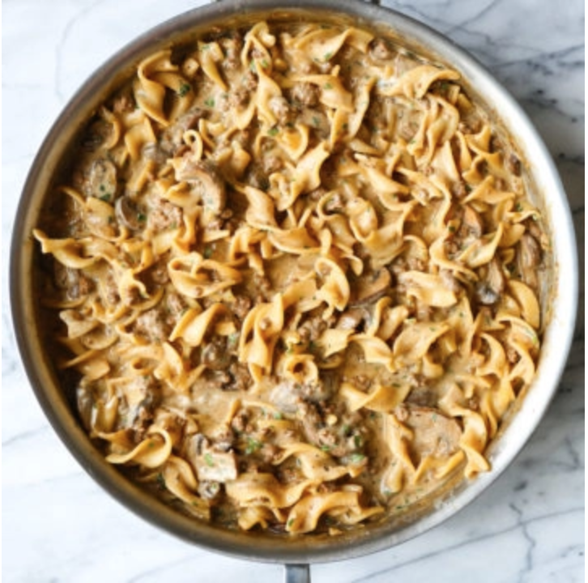

Beef Stroganoff

Description
Beef Stroganoff or Beef Stroganov is an originally Russian dish of
sautéed pieces of beef served in a sauce of mustard and smetana.
Ingredients
- 2 tablespoons unsalted butter
- 12 ounces cremini mushrooms, thickly sliced
- 1/2 medium sweet onion, diced
- Salt and freshly ground black pepper, to taste
- 1 pound lean ground beef
- 2 cloves garlic, minced
- 1/2 teaspoon dried thyme
- 3 tablespoons all-purpose flour
- 1/4 cup dry white wine
- 4 cups beef stock
- 2 tablespoons Worcestershire sauce
- 1 tablespoon Dijon mustard
- 8 ounces egg noodles, uncooked
- 1/2 cup sour cream
- 2 tablespoons chopped fresh parsley leaves
Steps
- Melt butter in a large skillet over medium heat. Add mushrooms and onion, and cook, stirring occasionally, until mushrooms are tender and browned, about 3-5 minutes; season with salt and pepper, to taste.
- Add ground beef and cook until browned, about 3-5 minutes, making sure to crumble the beef as it cooks. Stir in garlic and thyme until fragrant, about 1 minute.
- Whisk in flour until lightly browned, about 1 minute.
- Stir in wine, scraping any browned bits from the bottom of the skillet.
- Stir in beef stock, Worcestershire, Dijon and egg noodles; season with salt and pepper, to taste. Bring to a boil; cover, reduce heat and simmer until pasta is cooked through, about 9-10 minutes.
- Stir in sour cream until heated through, about 1-2 minutes.
- Serve immediately, garnished with parsley, if desired.